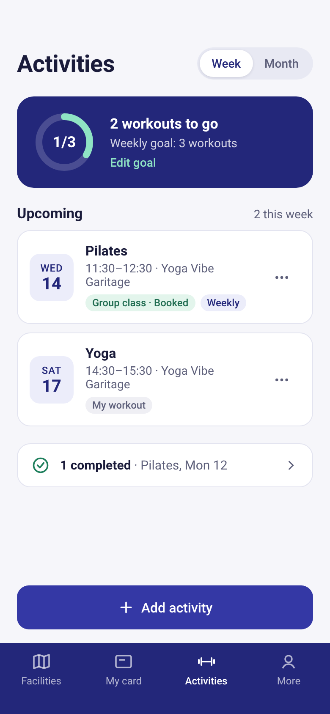
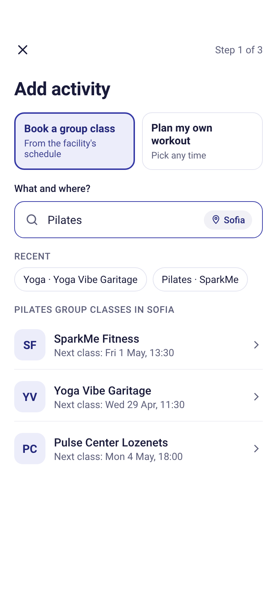
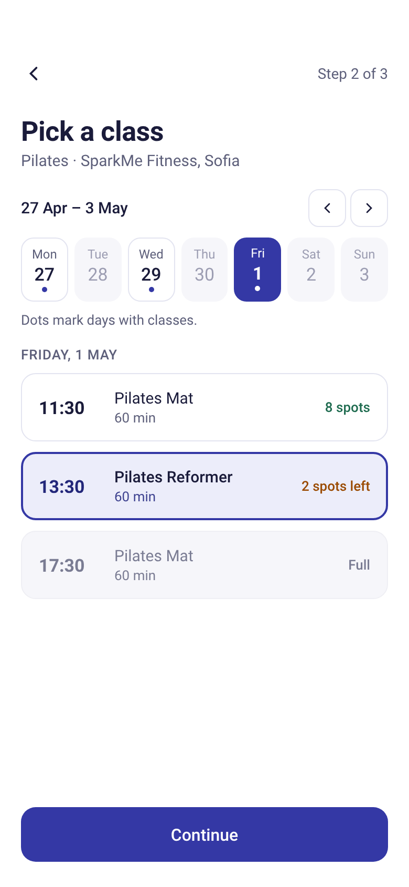
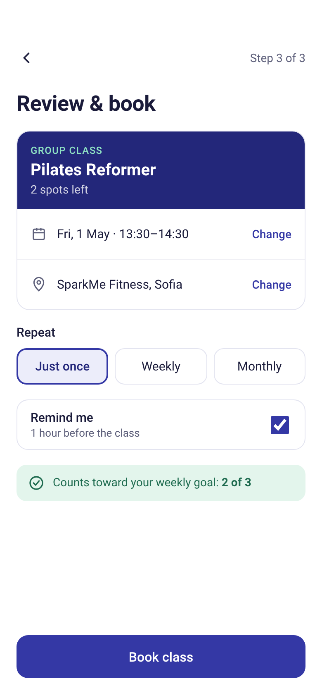
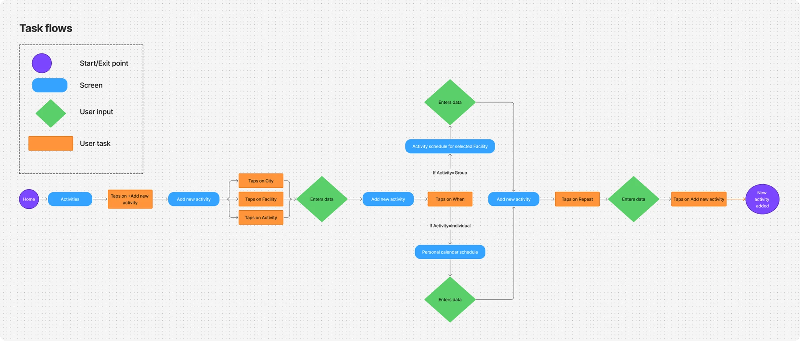
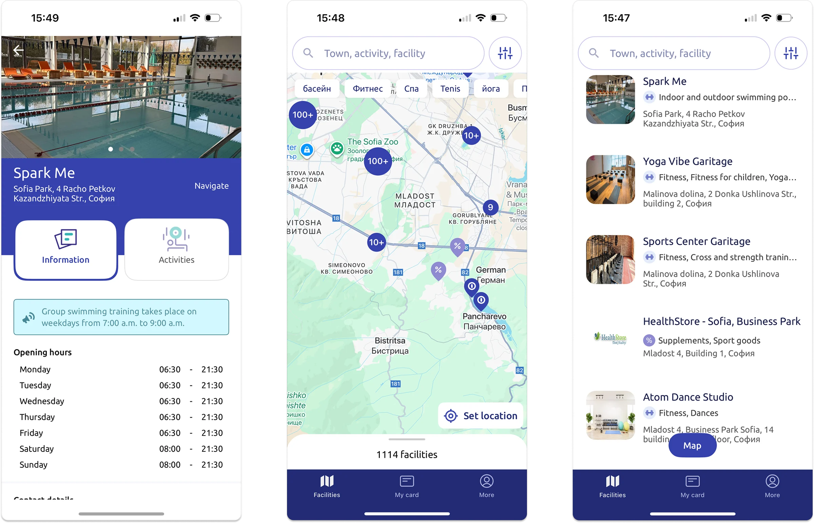
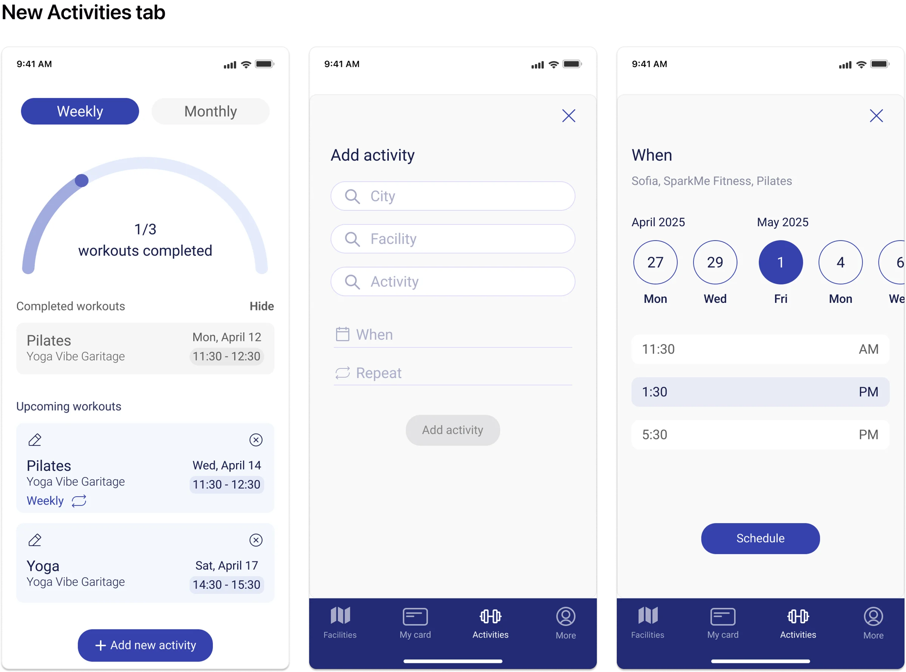

I designed an MVP that turns a digital membership card into a daily companion. Then I went back, critiqued my own first version, and redesigned the booking flow from about 10 screens down to 3 steps.




MyMultiSport lets members access their digital MultiSport card and find partner facilities. The company wants more engagement and, eventually, new subscription plans, so the app needs features people use more often than just scanning a card.
…help users plan individual and group workouts directly in the app, while keeping the design consistent and simple enough for an MVP?
Two task flows: for an individual workout, users pick a city, facility and activity, then set a date and time. For a group class, they see the center's schedule and book a spot. The new Activity tab tracks workouts against a goal, without a full redesign of the app.



Same brand, same navigation, same scope. Each screen does one job.